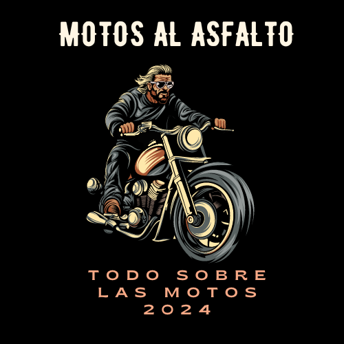

To add a comment box to your HTML page, you can include a form with a textarea for comments and a submit button. Below is the updated HTML with the addition of a comment box:
```html
MAQUINAS AL ASFALTO

SIGLO XIX Aunque hay disputas sobre quién inventó la primera motocicleta, muchas personas atribuyen la invención a Gottlieb Daimler y Wilhelm Maybach en 1885. Construyeron un vehículo de dos ruedas con un motor de combustión interna.
PRINCIPIOS DEL SIGLO XX La motocicleta comenzó a popularizarse con la producción en masa. Marcas icónicas como Harley-Davidson (fundada en 1903) y Indian Motorcycle (fundada en 1901) surgieron en esta época.
DECADA DE 1920 Se establecieron muchas empresas europeas, como BMW y Triumph, que siguen siendo marcas populares en la actualidad.
SEGUNDA GUERRA MUNDIAL Las motocicletas jugaron un papel importante en la guerra, especialmente en la movilidad militar.
DESPUES DE LA SEGUNDA GUERRA MUNDIAL Hubo un auge en la popularidad de las motocicletas, impulsado en parte por veteranos que buscaban la emoción y la libertad que ofrecían.
DECADA DE 1950-1960 La cultura de las motocicletas creció aún más con películas como "The Wild One" (1953) protagonizada por Marlon Brando y "Easy Rider" (1969) protagonizada por Peter Fonda y Dennis Hopper.
DECADA DE 1970 La tecnología y el diseño de las motocicletas siguieron avanzando, con la introducción de modelos más potentes y aerodinámicos.
SIGLO XXI Las motocicletas han seguido evolucionando con avances en tecnología, seguridad y diseño. También ha habido un crecimiento en la popularidad de motocicletas eléctricas y modelos más orientados a la eficiencia energética.
RESUMEN sLa historia de las motocicletas es una mezcla de ingeniería innovadora, cultura popular y pasión por la velocidad y la libertad.
Deja tu comentario